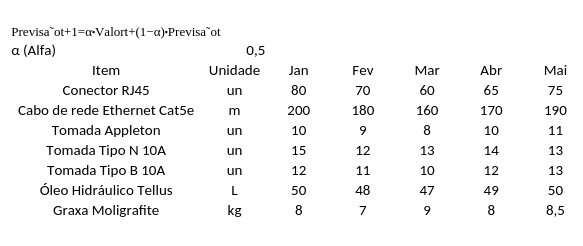

2016 - Autônomo
Projetos de cabeamento estruturado, condomínios e compartilhamento de infraestrutura
Projetos e montagem de sistemas elétricos de baixa tensão e automação residencial
2022 - Halliburton
Março: Realizei meu primeiro embarque onshore, no interior do Maranhão, atendendo a operações da Eneva.
Foi meu primeiro contato com uma planta de Well Test e com ferramentas do sistema SDAS.
Julho: Assumi a posição de Shop Leader de MPD, com menos de um ano de empresa.
Nesse período, foquei em automatização e controle das necessidades do setor.
Meu planejamento de médio e longo prazo era estabelecer maior controle sobre os gastos, bem como elaborar estratégias para planejamento e previsão de despesas.
Outubro: Meu primeiro embarque offshore.
Planilha de Suavização Exponencial

2023 - Halliburton
Comparações e análise dos embarques e trabalhos realizados ao longo do ano.
Embarques 2022 vs 2023
Serviços 2023
Sonda com mais embarques
Trabalhos Realizados
2024 - Halliburton
Comparações e análise dos embarques, serviços e atividades realizadas durante o ano de 2024.
Embarques 2022 vs 2023 vs 2024
Serviços 2024 (MPD, SWT, HCT-CI)
Distribuição de embarques por sonda (2024)
Tipos de Trabalho Realizados em 2024
2025 - Halliburton
Análise dos embarques, tipos de serviço e atividades realizadas no ano de 2025.